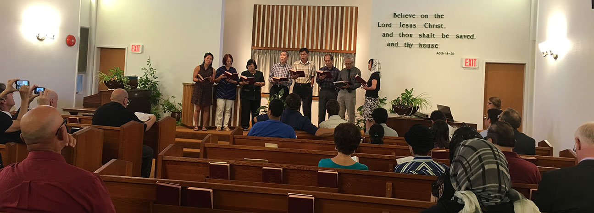

Resources

We are a family of bible believing Christians
We gather each Sunday to worship and praise Jesus Christ at a meeting the bible refers to as the Lord's Supper or Communion. We prioritize the faithful and consecutive teaching of the bible each Sunday morning at the 'Family Bible Hour'. Each Sunday night we come together for further bible teaching followed by congregational prayer where we implore the Lord for His will and blessings. Mid-week, we enjoy the company of one another at a weekly Bible Study where we share and encourage one another and pray for needs We strive to nurture and encourage children in godly living through Sunday School teaching, as well as Young Peoples on Friday nights. We also encourage ladies to come to our ladies fellowships twice a month in the mornings and once a month in the evening.
One of the greatest blessings this side of heaven is to gather with others who take God and His Word seriously. We are a group of believers saved by grace through faith in Christ and His finished work (Eph. 2:8-9) who meet simply around the Lord Jesus, seeking to follow only the directions given in the New Testament. We believe that the church is God’s idea. Christians do not meet in congregations merely because it is desirable or helpful, but because the Lord has ordained it (1 Thess. 2:14).
Our Lord Himself first spoke of the church when He declared that He was its builder and would establish it on a sure foundation (Mt. 16:18). He also first spoke concerning the local gatherings of believers (Mt. 18:17).
There may be some things about a local church like this that would be different for you. We would appreciate a few moments to explain how we meet and why.
If you suggested changing any other doctrine—salvation by faith in Christ, the deity of the Lord Jesus, or the inspiration of Scripture, for example—it would invite strong reaction from Bible-believing churches. But somehow many fee we are free to redesign the church any way it suits us. Yet we have no more right to make a new way of meeting than a new way of salvation.
“At the very outset of the New Testament it is striking that the Lord Jesus and the apostles labored to establish only one institution—the local church. Paul stated, ‘As a wise master builder, I have laid the foundation, and another buildeth thereon’ (1 Cor. 3:10). The local church lies at the heart of God’s program today. Indifference to the doctrine of the church is certainly indifference to the plan of God.”Frances Schaeffer writes, “The church did not sit there as a group of believers with no form. The New Testament form is commanded by God. These norms are not arbitrary—they are God’s form for the institutional, organized church and they are to be present in the twentieth century.”
We believe firmly in the historic doctrines of the church. However, rather than subscribing to man-made creeds, rules, and constitutions, we find the Word of God to be the only infallible statement of Christian faith and practice (2 Tim. 3:16). The Scriptures should be appealed to directly in a gracious and humble spirit (2 Tim. 2:25) to settle all disputes, give directives to the assembly, and provide the basis for all public and private ministry.
By this we mean people who, believing the gospel, have experienced the miracle of new birth, and know themselves to be “children of God by faith in our Lord Jesus Christ” (Gal. 3:26). We are “not ashamed of the gospel” (Rom. 1:16) and seek to share it with others.
Unconverted people cannot truly participate in worship or other holy activities of the church, nor could they be expected to support its testimony by holy living. Christians are exhorted not to be unequally yoked with unbelievers (2 Cor. 6:14-18), although we should do good to them and show them by our lives that we belong to the Lord Jesus.
Although a local church is a gathering of like-minded believers, no fellowship based on people will work. “Truly our fellowship,” said John, “is with the Father, and with His Son Jesus Christ” (1 Jn. 1:3). Matthew 18:20 states: “For where two or three are gathered together in My name, there am I in the midst of them.”
It is so easy to be distracted from Christ, to find ourselves gathering to a preacher, a set of doctrines, a sacrament, or form of church government. This is very different from being gathered to Christ. We want to recognize His headship (Col. 1:18) in our assembly practically. We believe He deserves this, for it is His church: “Christ also loved the church, and gave Himself for it” (Eph. 5:25).
As the early Christians did, we come together on the first day of each week to “break bread” (Acts 2:42; 20:7). Being a divine appointment, it should never be relegated to a secondary place, or treated as a matter of occasional obedience. It is to be a time of calling our Lord to mind and declaring His death for us. It is observed not as a sacrament administered by a clergyman, but celebrated as described in 1 Corinthians 11. The prime purpose of this time is not to minister to the saints, as in other meetings of the church, but to minister to the heart of God through appropriate reading of scriptures, worshipful hymns, and prayers expressing to God the worthiness of our Saviour.
The word “baptism” is the English form of the Greek word baptizo, which means to submerse or immerse. All converted people in New Testament times were baptized before taking their place in a local church (see Acts 2:41; 8:12). Christ had commanded that this should be done (Mt. 28:19). The same pattern is observed by scriptural assemblies today. Converts should be taught that baptism is the symbol of their being buried with Christ, and rising (as He rose) to walk “in newness of life” (Rom. 6:1-11).
Of course, it is not enough to recognize the truths of Scripture if we do not act on them. Many claim to be Bible-believing churches, and we thank God for that. But we must seek also to be a Bible-obeying church by the work of the Spirit of God in us. It is of the utmost importance that the Holy Spirit be given His place in the local assembly. His power is the only power for worship, ministry, or evangelism. It is easy to displace Him by substituting human arrangements. It is common in many congregations to have one man to preside as minister or pastor, with activities under his control. However, it is the Spirit who is to direct the saints in their meetings (1 Cor. 12 & 14).
From Acts 20:17-38, we see that the terms “elders” (v. 17) and “overseers” (bishops, see margin, v. 28) are used of the same individuals and are applied to those who “take heed...to the flock” (v. 28). In other words, elders, overseers (or bishops), and pastors (or shepherds) are all describing the same workers in the church. Elder emphasizes their maturity, overseer emphasizes their responsibility, shepherd emphasizes their ministry—to heed, lead, and feed the local flock. These men (the words are always used in the plural) are to fulfill the qualifications given in 1 Timothy 3 and Titus 1. Our elders are to be respected, prayed for, and obeyed. (Heb. 13:7, 17).
The work of Christ has removed all human distinctions of privilege (Gal. 3:28). And every believer, whether male or female, is a priest to God (Heb. 13:15). As holy priests (1 Pet. 2:5) and royal priests (1 Pet. 2:9), we can worship and witness all we desire. But as in the home, men and women are given distinct roles in the church. Church order, like chronological, or alphabetical order, has nothing to do with importance. It has been established by God so “all things [are] done decently and in (according to the ) order” (1 Cor. 14:40). Men are to come to church meetings prepared to function publicly as the Spirit leads, representing God to the assembly in the ministry of the Word (1 Pet. 4:10-11) or representing the assembly to God in prayer and praise. This is to be done carefully so everyone can add “Amen” (1 Cor. 14:16). The women are free to speak to the Lord all they wish, however they must do it silently. (They are only silent as far as we are concerned—God hears them, as He does the men who are praying silently). Thus the women have free access to pray and worship as the men do, but are not to usurp the authority from the men or act in the church as a representative. (1 Cor. 14:34; 1 Tim. 2:11-12).
God’s glory is to be seen alone in the assembly of the saints. In order to do this, the men remain uncovered by not having long hair anb by removing and head coverings, because the man is “the image and glory of God” (1 Cor. 11:7)l Any covering on the man would veil God’s glory. The women, however, are the stewards of the covering.
There are two competing glories in the church. “The woman is the glory of the man” (1 Cor. 11:7). And “if a woman have long hair, it is a glory to her” (1 Cor. 11:15). Because there are two symbolic glories to be covered, there must be two coverings. The first covering (Gk.peribolaion) is the woman’s long hair (v. 15b) to hide the glory of the man (the woman herself). The second covering (Gk. Katakalupto) is to hide her glory—her own hair. In this way, God’s authority is declared in the church. By it the mena are reminded that, in their ministry, their glory is to be hidden. The angels are also instructed by it (1 Cor. 11:10).
The assembly has been ministering to the residents of the care home for over 10 years. We attend normally on the first Sunday of each month . This ministry opportunity is a good training ground for those wanting to practice in delivering the gospel message or perhaps going into the missionary field.
The Family Bible is open to everyone for Ministry teaching. We all gather together each Sunday and then the children are released to their individual Sunday School classes. While the children are being taught, the adults can sit and learn under the inspiration of Word of God and the teaching brought forward each Sunday.
We offer classes each and every Sunday to children of all ages. These classes take place during the Family Bible Hour. Classes range from the pre-school to the young people of our assembly. These classes help equip our students in learning about Jesus and applying these truths to their lives. Each year we have our annual Sunday School picnic in June which is normally held in Redwood Park.
The Bible is the very word of God, without error in the original manuscripts, and of final authority in all matters of faith. (2 Tim. 3:16-17)
There is one God who exists eternally in three persons: Father, Son and Holy Spirit. (Is. 45:22; Mt. 28:19)
The human race is fallen, sinful, and lost. Regeneration by the Holy Spirit is absolutely essential for the salvation of the sinner. Redemption is only by grace through faith in our Lord Jesus Christ (Rm. 3:9-23; Rm. 6:3-6; Eph. 2:8-10; 2 Tim. 1:4)
To effect our redemption, Jesus Christ was: born of a virgin; lived a sinless and perfect life; and died on the cross in our place [for our sins]. He physically rose from the dead and, after forty days, ascended into heaven. (Lk. 1:30-35; 1 Cor. 15:3-4; 2 Cor. 5:21; 1 Pet. 2:21-22; 1 Jn. 3:5.)
From the moment of conversion, the Holy Spirit enables the believer to live a godly life. (1 Cor. 3:16; 2 Tim. 1:14; Titus 3:5)
Cascade Bible Chapel is a Bible-believing community that worships the one true God.
This chapel is located in the heart of Vancouver.